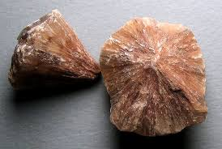

New here?

New to rockhounding and don't know where to start? Not to worry, we will show you the ropes. Click below to head over to our "Getting Started" guide
Getting StartedRocks & Minerals In Tennessee


Tennessee boasts diverse rockhounding opportunities, with popular locations such as the Elmwood Mine, known for its stunning calcite and fluorite specimens, and the Cumberland Plateau, where you can find beautiful agates and geodes. The state is also home to a variety of minerals, including barite, sphalerite, and galena, offering a range of fascinating finds for collectors.
Sponsored Dig Site

Own a digsite you would like to advertize in Tennessee? Contact us for more information about being our sponsor of the month! Email sponsors@rockhounding.org for more information.
Dig With UsPopular Rocks In Tennessee
-
 Agates
AgatesAgates can be found throughout Tennessee, particularly in the western part of the state near the Mississippi River, in areas with sedimentary and volcanic rocks.
Read More -
 Fluorite
FluoriteFluorite can be found in Tennessee, particularly in the eastern part of the state, in areas with hydrothermal veins and sedimentary rocks.
Read More -
 Galena
GalenaGalena, a lead ore, can be found in Tennessee, particularly in the southeastern part of the state, in areas with hydrothermal veins and sedimentary rocks.
Read More -
 Crinoids
CrinoidsCrinoid fossils can be found in Tennessee, particularly in the central and eastern parts of the state, in areas with limestone and shale deposits.
Read More -
 Malachite
MalachiteMalachite can be found in Tennessee, particularly in the southeastern part of the state, in areas with copper deposits and hydrothermal veins.
Read More -
 Sphalerite
SphaleriteSphalerite can be found in Tennessee, particularly in the eastern part of the state, in areas with hydrothermal veins and sedimentary rocks.
Read More -
 Magnetite
MagnetiteMagnetite can be found in Tennessee, particularly in the eastern part of the state, in areas with igneous intrusions and hydrothermal veins.
Read More -
 Calcite
CalciteCalcite can be found throughout Tennessee, particularly in limestone and dolomite deposits, in caves and geodes.
Read More -
 Hematite
HematiteHematite can be found in Tennessee, particularly in the eastern part of the state, in areas with igneous intrusions and hydrothermal veins.
Read More -

Barite
Barite can be found in Tennessee, particularly in the eastern part of the state, in areas with hydrothermal veins and sedimentary rocks.
Read More
Popular Areas In Tennessee
-
 Elmwood Mine
Elmwood MineLocated in Carthage, the Elmwood Mine is renowned for its striking specimens of fluorite, sphalerite, and barite. Although not open to the public for collecting, the mine produces some of the most beautiful mineral specimens in the world.
Read More -
Cooper's Gem Mine
Cooper's Gem Mine in Blountville offers visitors the opportunity to mine for a variety of gemstones, including quartz, amethyst, and garnets. This family-friendly attraction is perfect for all ages and experience levels.
Read More -
Cumberland Plateau
The Cumberland Plateau, stretching across central Tennessee, is home to an abundance of minerals such as quartz and calcite. Many abandoned mines and quarries in the area offer great opportunities for rockhounding enthusiasts.
Read More -
Old Hickory Lake
Old Hickory Lake near Nashville is a popular destination for fossil hunting. The lake's shoreline is a treasure trove of fossils, including crinoids, brachiopods, and corals from the Ordovician Period.
Read More -
Little River Gem Mine
Located in Townsend, Little River Gem Mine is a family-friendly attraction where visitors can mine for gemstones like quartz, garnets, and sapphires. The mine provides all necessary equipment and guidance for a fun gem-hunting experience.
Read More -
Gray Fossil Site
The Gray Fossil Site in Gray is a significant paleontological site containing well-preserved fossils from the Miocene Epoch. The on-site museum offers guided tours, educational exhibits, and hands-on activities for visitors.
Read More
Geology of Tennessee
Tennessee's geology is diverse, with ancient crystalline rocks in the Appalachian Plateau and younger sedimentary rocks, including limestone, shale, and sandstone, in the Nashville Basin and the Mississippi Embayment. The state is also home to the Great Smoky Mountains, part of the larger Appalachian Mountain Range.
Tennessee is known for its mineral wealth, including copper, zinc, and lead, as well as its gemstones like sapphires, rubies, and garnets. The state is also famous for its diverse fossil deposits, particularly in the Central Basin region.
Rockhounding in Tennessee offers a range of opportunities, from exploring the state's rich mineral and gemstone deposits to hunting for fossils in the Central Basin and other geologically interesting areas.